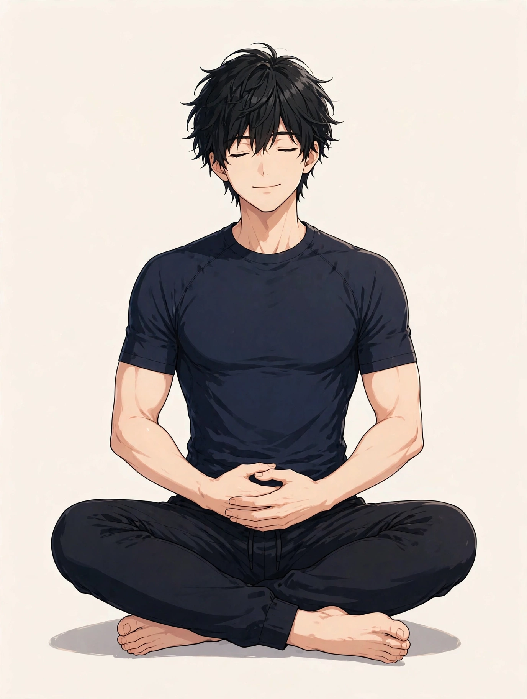
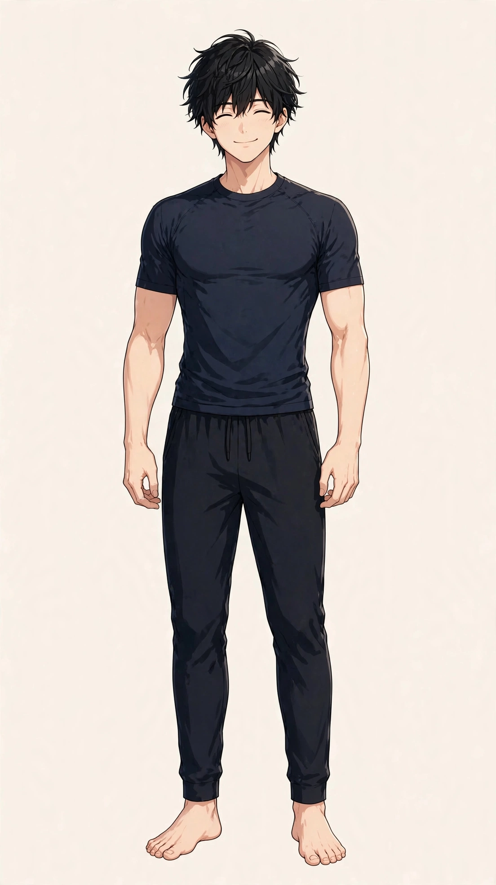

東三国で気になる自律神経の乱れ感
男性の日常の整え方と受診の目安

「朝起きてもすっきりしない日が続く」「夕方になると急に疲れが出て、気持ちが落ち着かない感じがする」「季節の変わり目に、体調のリズムが崩れたように感じる」。東三国や新大阪、淀川区周辺で働く男性から、こうした声を聞くことがあります。「自律神経の乱れ」という言葉で語られることの多いこの感覚は、感じ方や背景が人によって異なり、一つの原因だけで説明できるものではありません。この記事では原因を断定するのではなく、自律神経についての一般的な考え方と、考えられる要因、日常の整え方として試せること、医療機関に相談したほうがよい目安をまとめます。眠りの質も気になる方は寝つきと疲労感についてのコラムもあわせてご覧ください。
自律神経の乱れ感とは：体のリズムに関わるとされる仕組み
一般に自律神経は、呼吸や体温、心臓の拍動、消化など、意識しなくても体が自動で調整している働きに関わる神経の総称とされています。活動のときに働きが強まるとされる交感神経と、休息のときに働きが強まるとされる副交感神経の二つがあり、この切り替えのリズムが、一日の体調の感じ方に関わると考えられています。「自律神経の乱れ感」は正式な病名ではなく、朝すっきり起きられない、夕方にどっと疲れる、なんとなく落ち着かない、手足の冷えやほてりを感じる、眠りが浅い感じがするなど、体のリズムの崩れとして自覚される感覚を指して使われることが多い言葉です。感じ方は日によっても変わります。まずは「どんな時間帯に、どんな感覚が気になるか」「どんな日に強く感じるか」を自分の言葉で整理しておくと、日常の見直しの手がかりや、専門家に相談するときの伝え方がスムーズになります。
体のリズムに関わる部位の位置は、図1のとおりです。

自律神経は、頭（脳）からの指令で、胸の呼吸や心臓の拍動、お腹の消化の働きなどを無意識に調整するとされます。乱れ感は一か所の問題ではなく、全身のリズムの重なりとして現れます。位置は目安です。
考えられる要因
自律神経の乱れ感の背景には、生活リズムや過ごし方、環境など、いくつかの要因が重なっている場合があります。以下は代表的なものとして挙げられる要因ですが、当てはまるかどうかや程度は人によって異なります。
- 睡眠のリズムの乱れ：就寝・起床の時刻が日によって大きくずれる、睡眠時間が不足する日が続くなど、眠りのリズムが不規則になると、翌日の疲れの残り方の感じ方に影響する場合があります。
- 忙しさや緊張の続く時期：仕事の繁忙期や締め切りが重なる時期など、緊張した状態が長く続くと、休息の時間になっても気持ちが切り替わりにくいと感じる方もいます。
- 夜の過ごし方：就寝直前までスマートフォンやパソコンの画面を見る、夜遅い時間に食事やカフェイン、飲酒が重なるといった過ごし方が、寝つきや翌朝の感じ方に関わることもあります。
- 昼と夜の光の浴び方：日中は屋内で過ごす時間が長く日の光を浴びる機会が少ない一方で、夜は明るい照明の下で過ごす時間が長いなど、光の浴び方の偏りが気になる方もいます。
- 運動量の波：忙しい日が続いて体を動かす機会が減る一方で、休日に急に激しい運動をするなど、運動量の波が大きい生活が続いている場合があります。
- 気温や気圧の変化：季節の変わり目や朝晩の寒暖差が大きい時期、天気の崩れる前後などに、体調のリズムの崩れを感じると話す方もいます。
- 食生活の不規則さ：朝食を抜く日が多い、食事の時刻がばらばらなど、食生活のリズムがそろいにくい状態が続いている方もいます。
日常で試せる整え方・セルフケア
特別な道具がなくても始められる、生活リズムの見直しを中心にまとめました。体調がすぐれない日は無理をせず、気になる症状が強いときは、セルフケアより先に医療機関への相談をご検討ください。
- 起きる時刻をそろえる：休日も含めて起床時刻のずれを小さくし、起きたらカーテンを開けて朝の光を浴びる習慣を試してみてください。そろえるのが難しい日は、まず光を浴びるところからで構いません。
- 日中に体を動かす時間を作る：通勤の一駅分を歩く、昼休みに外を少し歩くなど、日中に軽く体を動かす場面を増やす方もいます。東三国駅から自宅までの道のりなど、無理のない範囲で取り入れてください。激しい運動でなくて構いません。
- 夜は画面と光を落としていく：就寝前は部屋の照明を少し落とし、スマートフォンを見る時間を区切るなど、夜の過ごし方をゆるやかに切り替えていく工夫です。入浴や身支度など、毎晩の流れを決めておく方もいます。
- 湯船に浸かる：シャワーで済ませがちな日こそ、ぬるめのお湯に10〜15分ほど浸かって体を温める時間を作る方もいます。熱すぎない温度で、気持ちよいと感じる範囲にとどめてください。
- 食事と水分のリズムをそろえる：食事の時刻をできるだけそろえる、朝に何か口にする、こまめに水分を取るなど、食生活のリズムを振り返ってみてください。無理な食事制限は避けてください。
- ゆっくり呼吸する時間を作る：静かな場所で、吐く息を長めに意識しながらゆっくり呼吸する時間を、数分だけ作る方もいます。めまいなどを感じたら中止してください。
- 夜のカフェイン・飲酒のタイミングを見直す：夕方以降のカフェインや就寝直前の飲酒が続いている場合は、量やタイミングを振り返ることも一つの見直しです。仕事帰りの一服が習慣になっている方は、その時間の使い方を変えてみる方もいます。
呼吸の流れと手の位置の目安は、図2のとおりです。
①椅子や床に座り、両手を下腹部に重ねる ②鼻からゆっくり吸って、お腹のふくらみを手で感じる ③口から細く長く吐く、を5回ほど繰り返します。吐く息を長めにすることが、落ち着きを取り戻す目安になります。
セルフケアは一度に全部をやろうとせず、続けられそうなものを一つ選ぶところから始めるのがおすすめです。感じ方には個人差があり、日によっても変わりますので、その日の体調に合わせて無理のない範囲で行ってください。
医療機関への受診を考える目安
次のような様子がある場合は、セルフケアや当院でのケアの前に、内科などの医療機関への相談をご検討ください。当院は医療機関ではなく、症状の診断や治療は行いません。「自律神経の乱れ」と自己判断する前に、背景に体の病気がないかを確認しておくことも大切です。
- 動悸や息苦しさ、胸の痛みや圧迫感がある
- めまいや立ちくらみがあり、倒れそうになることがある
- 数週間たっても眠りの浅さや疲労感が続き、仕事や日常生活に支障が出ている
- 気分の落ち込みや不安が強く、長く続いている
- 体重の変化が大きい、発汗や手の震えなど、ほかの体調の変化も重なっている
- 発熱や強い痛みなど、急性の症状を伴っている
上記に当てはまらなくても、気になる症状が続くときは、早めに医療機関や専門家へ相談することが大切です。体のリズムの崩れの背景には、甲状腺の病気や貧血などが関わる場合もあり、自己判断だけで様子を見続けないことも一つの目安になります。
北辰堂のご案内
北辰堂は、大阪市淀川区東三国二丁目にある男性専用の整体院です。施術歴30年の平賀伸人（鍼灸師・国家資格）が、整体とリラクゼーションを行います。当院では鍼灸施術は行いません。営業は平日・土曜17:00〜22:00、日曜10:00〜22:00の完全予約制です。料金は60分 初回2,000円／2回目以降6,000円、90分 初回3,000円／2回目以降9,000円で、お支払いは現金のみです。プライバシーへの配慮のため、詳しい住所はご予約確定後にLINEでご案内します。
料金は60分 初回2,000円／2回目以降6,000円、90分 初回3,000円／2回目以降9,000円で、お支払いは現金のみです。施術を受けたからといって体のリズムの状態がどうなるかをお約束することはできませんが、その日の体の状態を確認しながら、ゆっくり体を預けられる時間をご用意しています。気になるお悩みの例は北辰堂についてにもまとめています。
コースの内容はメニュー・料金、施術者は施術者について、ご予約の流れは当日の流れとLINE予約の下書きづくり、場所についてはアクセスをご覧ください。あわせて寝つきと疲労感についてのコラムや冷え感についてのコラム、よくある質問もご参考ください。
ほかのコラム記事
関連する疾患別ページ
ご予約・ご相談はLINEから
東三国・新大阪・淀川区周辺で、体のケアの相談先をお探しの方は、LINE公式アカウント（北辰堂）からお気軽にご連絡ください。現在の状態をお聞きしたうえで、施術の進め方をご案内します。
LINEで予約する